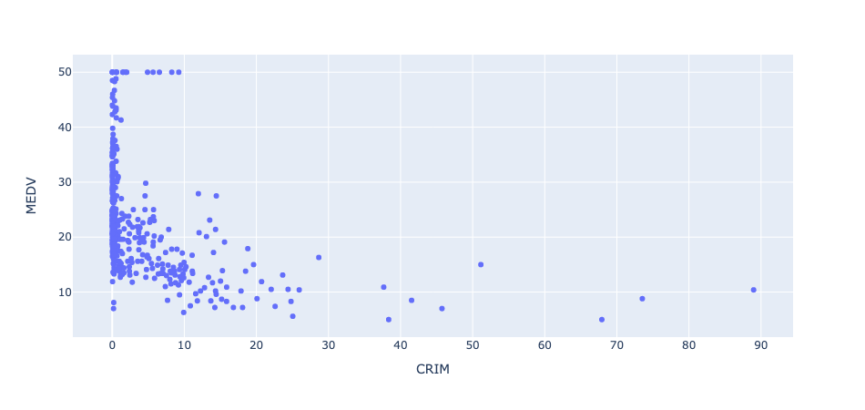
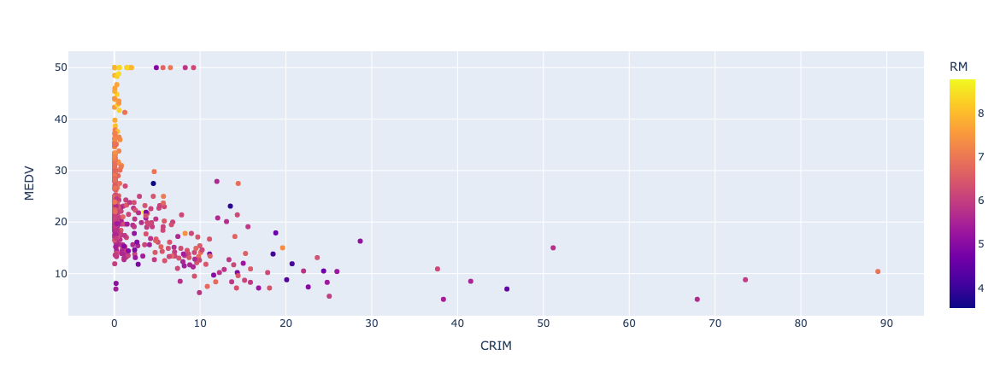
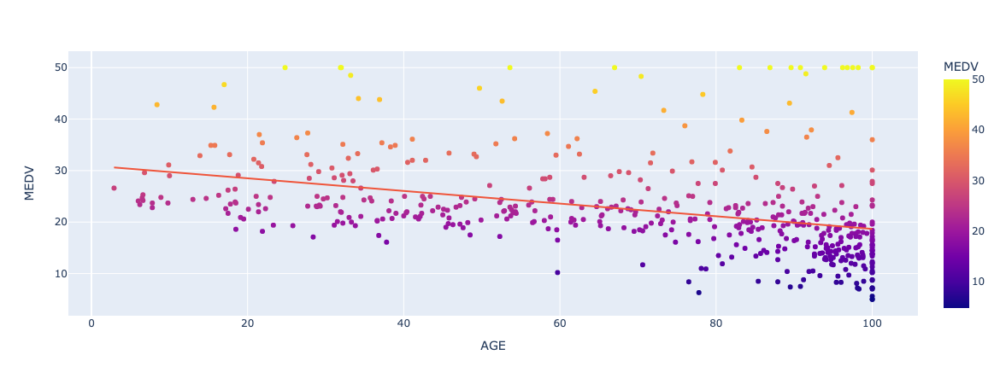
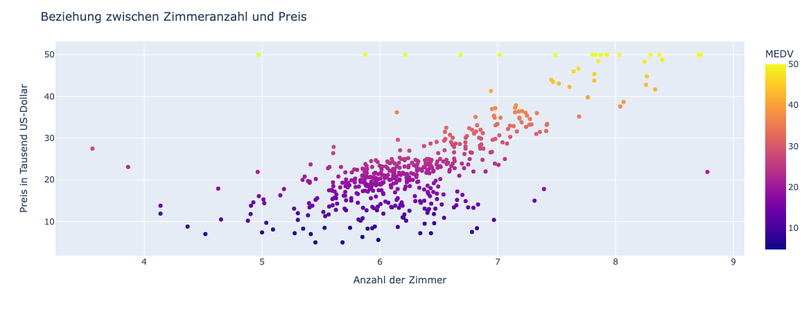
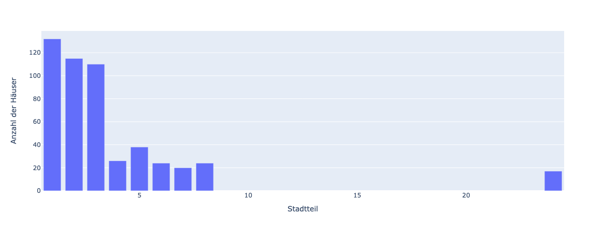
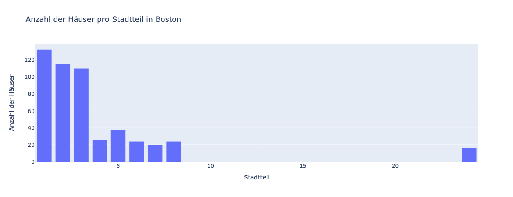

Streudiagramm und Balkendiagramm#
Plotly Express unterstützt eine Vielzahl von Diagrammtypen, darunter Liniendiagramme, Balkendiagramme, Flächendiagramme, Streudiagramme und viele andere. Darüber hinaus bietet es auch eine Reihe von Anpassungsmöglichkeiten, mit denen Sie Ihre Grafiken auf Ihre spezifischen Bedürfnisse anpassen können. Das alles bietet auch die sehr bekannte Bibliothek Matplotlib. Im Gegensatz zu Matplotlib ist Plotly Express jedoch interaktiv. Die erstellten Grafiken können mithilfe von Mausklicks oder Berührungen auf mobilen Geräten erkundet werden. Sie können auch Zoomen, Scrollen, Anzeigen von Details durch Hovern und weitere Interaktionsfunktionen.
Lernziele#
Lernziele
Sie können das Modul Plotly Express als px importieren.
Sie können ein Streudiagramm erstellen.
Sie können ein Balkendiagramm erstellen.
Sie können ein Diagramm stylen, also z.B. die Achsenbeschriftung und einen Titel setzen sowie die Farbe und Größe der Kreise in einem Streudiagramm anpassen.
Diagrammtypen#
Bei der Datenvisualisierung geht es darum, Daten durch eine Grafik so aufzubereiten, dass Muster oder Unregelmäßigkeiten in den Daten entdeckt werden können. Dabei kann die visuelle Darstellung der Daten helfen, Muster in den Daten zu entdecken, aber sie kann auch irreführend sein. Abhängig davon, wie die Art der Daten beschaffen ist, die wir visualisieren wollen, gibt es verschiedene Darstellungsformen, die sogenannten Diagrammtypen. Im Folgenden betrachten wir die Diagrammtypen
Streudiagramm und
Balkendiagramm (Säulendiagramm).
Danach beschäftigen wir uns mit der Gestaltung bzw. dem Styling von Diagrammen.
Streudiagramme#
Streudiagramme (englisch: Scatterplot) werden eingesetzt, wenn dder Zusammenhang zwischen zwei numerischen Größen untersucht werden soll. Das ist vor allem bei Exoerimenten häufig der Fall.
Um ein Streudiagramm mit Plotly Express zu visualisieren, gehten wir folgendermaßen vor.
Importieren Sie Plotly Express mit der typischen Abkürzung px:
import plotly.express as px
Laden Sie dann Ihre Daten in einen Pandas-DataFrame. Um Plotly zu demonstrieren, benutzen wir einen sehr bekannten Datensatz, den Boston Housing Datensatz.
Der Boston Housing Datensatz ist ein bekannter Datensatz in der Machine-Learning-Community. Es ist ein klassisches Regressionsproblem, bei dem das Ziel darin besteht, den Medianwert der Besitzer-geprägten Häuser in einem bestimmten Bostoner Vorort in Tausend-Dollar-Einheiten vorherzusagen, basierend auf verschiedenen Eigenschaften der Häuser und der Nachbarschaften.
Mehr Details zum Datensatz finden Sie hier:
Zuerst laden wir den Datensatz und verschaffen uns einen groben Überblick.
import pandas as pd
# Laden des Boston Housing Price Datensatzes
df = pd.read_csv("https://archive.ics.uci.edu/ml/machine-learning-databases/housing/housing.data",
header=None, delim_whitespace=True,
names=['CRIM', 'ZN', 'INDUS', 'CHAS', 'NOX', 'RM', 'AGE', 'DIS', 'RAD', 'TAX', 'PTRATIO', 'B', 'LSTAT', 'MEDV'])
df.info()
---------------------------------------------------------------------------
KeyboardInterrupt Traceback (most recent call last)
Cell In[2], line 4
1 import pandas as pd
3 # Laden des Boston Housing Price Datensatzes
----> 4 df = pd.read_csv("https://archive.ics.uci.edu/ml/machine-learning-databases/housing/housing.data",
5 header=None, delim_whitespace=True,
6 names=['CRIM', 'ZN', 'INDUS', 'CHAS', 'NOX', 'RM', 'AGE', 'DIS', 'RAD', 'TAX', 'PTRATIO', 'B', 'LSTAT', 'MEDV'])
7 df.info()
File /opt/homebrew/Caskroom/miniconda/base/envs/python310/lib/python3.10/site-packages/pandas/util/_decorators.py:211, in deprecate_kwarg.<locals>._deprecate_kwarg.<locals>.wrapper(*args, **kwargs)
209 else:
210 kwargs[new_arg_name] = new_arg_value
--> 211 return func(*args, **kwargs)
File /opt/homebrew/Caskroom/miniconda/base/envs/python310/lib/python3.10/site-packages/pandas/util/_decorators.py:331, in deprecate_nonkeyword_arguments.<locals>.decorate.<locals>.wrapper(*args, **kwargs)
325 if len(args) > num_allow_args:
326 warnings.warn(
327 msg.format(arguments=_format_argument_list(allow_args)),
328 FutureWarning,
329 stacklevel=find_stack_level(),
330 )
--> 331 return func(*args, **kwargs)
File /opt/homebrew/Caskroom/miniconda/base/envs/python310/lib/python3.10/site-packages/pandas/io/parsers/readers.py:950, in read_csv(filepath_or_buffer, sep, delimiter, header, names, index_col, usecols, squeeze, prefix, mangle_dupe_cols, dtype, engine, converters, true_values, false_values, skipinitialspace, skiprows, skipfooter, nrows, na_values, keep_default_na, na_filter, verbose, skip_blank_lines, parse_dates, infer_datetime_format, keep_date_col, date_parser, dayfirst, cache_dates, iterator, chunksize, compression, thousands, decimal, lineterminator, quotechar, quoting, doublequote, escapechar, comment, encoding, encoding_errors, dialect, error_bad_lines, warn_bad_lines, on_bad_lines, delim_whitespace, low_memory, memory_map, float_precision, storage_options)
935 kwds_defaults = _refine_defaults_read(
936 dialect,
937 delimiter,
(...)
946 defaults={"delimiter": ","},
947 )
948 kwds.update(kwds_defaults)
--> 950 return _read(filepath_or_buffer, kwds)
File /opt/homebrew/Caskroom/miniconda/base/envs/python310/lib/python3.10/site-packages/pandas/io/parsers/readers.py:605, in _read(filepath_or_buffer, kwds)
602 _validate_names(kwds.get("names", None))
604 # Create the parser.
--> 605 parser = TextFileReader(filepath_or_buffer, **kwds)
607 if chunksize or iterator:
608 return parser
File /opt/homebrew/Caskroom/miniconda/base/envs/python310/lib/python3.10/site-packages/pandas/io/parsers/readers.py:1442, in TextFileReader.__init__(self, f, engine, **kwds)
1439 self.options["has_index_names"] = kwds["has_index_names"]
1441 self.handles: IOHandles | None = None
-> 1442 self._engine = self._make_engine(f, self.engine)
File /opt/homebrew/Caskroom/miniconda/base/envs/python310/lib/python3.10/site-packages/pandas/io/parsers/readers.py:1735, in TextFileReader._make_engine(self, f, engine)
1733 if "b" not in mode:
1734 mode += "b"
-> 1735 self.handles = get_handle(
1736 f,
1737 mode,
1738 encoding=self.options.get("encoding", None),
1739 compression=self.options.get("compression", None),
1740 memory_map=self.options.get("memory_map", False),
1741 is_text=is_text,
1742 errors=self.options.get("encoding_errors", "strict"),
1743 storage_options=self.options.get("storage_options", None),
1744 )
1745 assert self.handles is not None
1746 f = self.handles.handle
File /opt/homebrew/Caskroom/miniconda/base/envs/python310/lib/python3.10/site-packages/pandas/io/common.py:713, in get_handle(path_or_buf, mode, encoding, compression, memory_map, is_text, errors, storage_options)
710 codecs.lookup_error(errors)
712 # open URLs
--> 713 ioargs = _get_filepath_or_buffer(
714 path_or_buf,
715 encoding=encoding,
716 compression=compression,
717 mode=mode,
718 storage_options=storage_options,
719 )
721 handle = ioargs.filepath_or_buffer
722 handles: list[BaseBuffer]
File /opt/homebrew/Caskroom/miniconda/base/envs/python310/lib/python3.10/site-packages/pandas/io/common.py:363, in _get_filepath_or_buffer(filepath_or_buffer, encoding, compression, mode, storage_options)
361 # assuming storage_options is to be interpreted as headers
362 req_info = urllib.request.Request(filepath_or_buffer, headers=storage_options)
--> 363 with urlopen(req_info) as req:
364 content_encoding = req.headers.get("Content-Encoding", None)
365 if content_encoding == "gzip":
366 # Override compression based on Content-Encoding header
File /opt/homebrew/Caskroom/miniconda/base/envs/python310/lib/python3.10/site-packages/pandas/io/common.py:265, in urlopen(*args, **kwargs)
259 """
260 Lazy-import wrapper for stdlib urlopen, as that imports a big chunk of
261 the stdlib.
262 """
263 import urllib.request
--> 265 return urllib.request.urlopen(*args, **kwargs)
File /opt/homebrew/Caskroom/miniconda/base/envs/python310/lib/python3.10/urllib/request.py:216, in urlopen(url, data, timeout, cafile, capath, cadefault, context)
214 else:
215 opener = _opener
--> 216 return opener.open(url, data, timeout)
File /opt/homebrew/Caskroom/miniconda/base/envs/python310/lib/python3.10/urllib/request.py:519, in OpenerDirector.open(self, fullurl, data, timeout)
516 req = meth(req)
518 sys.audit('urllib.Request', req.full_url, req.data, req.headers, req.get_method())
--> 519 response = self._open(req, data)
521 # post-process response
522 meth_name = protocol+"_response"
File /opt/homebrew/Caskroom/miniconda/base/envs/python310/lib/python3.10/urllib/request.py:536, in OpenerDirector._open(self, req, data)
533 return result
535 protocol = req.type
--> 536 result = self._call_chain(self.handle_open, protocol, protocol +
537 '_open', req)
538 if result:
539 return result
File /opt/homebrew/Caskroom/miniconda/base/envs/python310/lib/python3.10/urllib/request.py:496, in OpenerDirector._call_chain(self, chain, kind, meth_name, *args)
494 for handler in handlers:
495 func = getattr(handler, meth_name)
--> 496 result = func(*args)
497 if result is not None:
498 return result
File /opt/homebrew/Caskroom/miniconda/base/envs/python310/lib/python3.10/urllib/request.py:1391, in HTTPSHandler.https_open(self, req)
1390 def https_open(self, req):
-> 1391 return self.do_open(http.client.HTTPSConnection, req,
1392 context=self._context, check_hostname=self._check_hostname)
File /opt/homebrew/Caskroom/miniconda/base/envs/python310/lib/python3.10/urllib/request.py:1348, in AbstractHTTPHandler.do_open(self, http_class, req, **http_conn_args)
1346 try:
1347 try:
-> 1348 h.request(req.get_method(), req.selector, req.data, headers,
1349 encode_chunked=req.has_header('Transfer-encoding'))
1350 except OSError as err: # timeout error
1351 raise URLError(err)
File /opt/homebrew/Caskroom/miniconda/base/envs/python310/lib/python3.10/http/client.py:1283, in HTTPConnection.request(self, method, url, body, headers, encode_chunked)
1280 def request(self, method, url, body=None, headers={}, *,
1281 encode_chunked=False):
1282 """Send a complete request to the server."""
-> 1283 self._send_request(method, url, body, headers, encode_chunked)
File /opt/homebrew/Caskroom/miniconda/base/envs/python310/lib/python3.10/http/client.py:1329, in HTTPConnection._send_request(self, method, url, body, headers, encode_chunked)
1325 if isinstance(body, str):
1326 # RFC 2616 Section 3.7.1 says that text default has a
1327 # default charset of iso-8859-1.
1328 body = _encode(body, 'body')
-> 1329 self.endheaders(body, encode_chunked=encode_chunked)
File /opt/homebrew/Caskroom/miniconda/base/envs/python310/lib/python3.10/http/client.py:1278, in HTTPConnection.endheaders(self, message_body, encode_chunked)
1276 else:
1277 raise CannotSendHeader()
-> 1278 self._send_output(message_body, encode_chunked=encode_chunked)
File /opt/homebrew/Caskroom/miniconda/base/envs/python310/lib/python3.10/http/client.py:1038, in HTTPConnection._send_output(self, message_body, encode_chunked)
1036 msg = b"\r\n".join(self._buffer)
1037 del self._buffer[:]
-> 1038 self.send(msg)
1040 if message_body is not None:
1041
1042 # create a consistent interface to message_body
1043 if hasattr(message_body, 'read'):
1044 # Let file-like take precedence over byte-like. This
1045 # is needed to allow the current position of mmap'ed
1046 # files to be taken into account.
File /opt/homebrew/Caskroom/miniconda/base/envs/python310/lib/python3.10/http/client.py:976, in HTTPConnection.send(self, data)
974 if self.sock is None:
975 if self.auto_open:
--> 976 self.connect()
977 else:
978 raise NotConnected()
File /opt/homebrew/Caskroom/miniconda/base/envs/python310/lib/python3.10/http/client.py:1455, in HTTPSConnection.connect(self)
1452 else:
1453 server_hostname = self.host
-> 1455 self.sock = self._context.wrap_socket(self.sock,
1456 server_hostname=server_hostname)
File /opt/homebrew/Caskroom/miniconda/base/envs/python310/lib/python3.10/ssl.py:513, in SSLContext.wrap_socket(self, sock, server_side, do_handshake_on_connect, suppress_ragged_eofs, server_hostname, session)
507 def wrap_socket(self, sock, server_side=False,
508 do_handshake_on_connect=True,
509 suppress_ragged_eofs=True,
510 server_hostname=None, session=None):
511 # SSLSocket class handles server_hostname encoding before it calls
512 # ctx._wrap_socket()
--> 513 return self.sslsocket_class._create(
514 sock=sock,
515 server_side=server_side,
516 do_handshake_on_connect=do_handshake_on_connect,
517 suppress_ragged_eofs=suppress_ragged_eofs,
518 server_hostname=server_hostname,
519 context=self,
520 session=session
521 )
File /opt/homebrew/Caskroom/miniconda/base/envs/python310/lib/python3.10/ssl.py:1071, in SSLSocket._create(cls, sock, server_side, do_handshake_on_connect, suppress_ragged_eofs, server_hostname, context, session)
1068 if timeout == 0.0:
1069 # non-blocking
1070 raise ValueError("do_handshake_on_connect should not be specified for non-blocking sockets")
-> 1071 self.do_handshake()
1072 except (OSError, ValueError):
1073 self.close()
File /opt/homebrew/Caskroom/miniconda/base/envs/python310/lib/python3.10/ssl.py:1342, in SSLSocket.do_handshake(self, block)
1340 if timeout == 0.0 and block:
1341 self.settimeout(None)
-> 1342 self._sslobj.do_handshake()
1343 finally:
1344 self.settimeout(timeout)
KeyboardInterrupt:
Der Datensatz enthält 506 Zeilen und 14 Spalten, darunter die Zielvariable “MEDV”, sowie verschiedene prädiktive Variablen wie beispielsweise die Kriminalitätsrate, den Anteil der Wohngrundstücke, die sich am Flussufer befinden, die durchschnittliche Anzahl der Zimmer pro Wohnung, das Schüler-Lehrer-Verhältnis in den Schulen usw.
Nun können wir mit Plotly Express einen Scatterplot erstellen, um den Zusammenhang zwischen der Kriminalitätsrate und dem Medianwert der Häuser zu untersuchen:
# Erstellen des Scatterplots mit Plotly Express
fig = px.scatter(df, x='CRIM', y='MEDV')
fig.show()
Mit der Funktion scatter() wird das Streudiagramm erzeugt. Als erstes Argument
wird der komplette Datensatz df übergeben. Mit x= wird die Spalte aus dem
DataFrame angegeben, die auf der x-Achse aufgetragen werden sollen. Mit y=
werden die Daten für die y-Achse spezifisiert. Das komplette Diagramm wird der
Variablen fig zugewiesen.
Noch gibt es allerdings noch nichts zu sehen. Daher führen wir noch die folgende Code-Zelle aus:
# Anzeige des Diagramms
fig.show()

In diesem Beispiel wird also ein Scatterplot erzeugt, bei dem die Kriminalitätsrate auf der x-Achse und der Medianwert der Hauspreise auf der y-Achse dargestellt wird. Übrigens, wir können sehen, dass es eine starke negative Korrelation zwischen der Kriminalitätsrate und dem Medianwert gibt - je höher die Kriminalitätsrate, desto niedriger der Hauspreis.
Styling von Streudiagrammen#
Die Voreinstellungen von Plotly sind bereits sehr gut gewählt, so dass ohne weitere Optionen bereits ansprechende Diagramme erstellt werden. Hier sind einige Tipps, wie Sie das Styling Ihres Scatterplots mit Plotly verbessern können.
Visualisieren Sie Zusaztinformationen durch die Farbe der Punkte. Wählen Sie
dabei eine geeignete Farbpalette: Die Farben, die Sie für Ihre Punkte verwenden,
können Ihre Visualisierung entweder verbessern oder ablenken. Sie sollten eine
Farbpalette wählen, die Ihren Daten am besten entspricht. Bei unserem Beispiel
können wir beispielsweise zusätzlich die durchschnittliche Anzahl an Räumen pro
Wohnung/Haus visualisieren. Dazu wird die Scatter-Funktion um das Argument
color= ergänzt. Die durchschnittliche Anzahl an Räumen befindet sich in der
Spalte RM.
fig = px.scatter(df, x='CRIM', y='MEDV', color='RM')
fig.show()

Passen Sie die Größe und Form der Punkte an: Die Größe und Form der Punkte in Ihrem Scatterplot können verwendet werden, um zusätzliche Informationen hervorzuheben. Sie können die Größe und Form Ihrer Punkte anpassen, um verschiedene Kategorien oder Gruppen innerhalb Ihrer Daten zu zeigen. Im nächsten Beispiel wird zusätzlich noch das Alter der Häuser durch die Größe der Kreise repräsentiert.
fig = px.scatter(df, x='CRIM', y='MEDV', size='AGE', color='RM')
fig.show()

Fügen Sie einen Trendlinie hinzu: Eine Trendlinie kann helfen, Muster und Trends
in Ihren Daten zu erkennen. Sie können eine Trendlinie zu Ihrem Scatterplot
hinzufügen, um eine schnelle und einfache Zusammenfassung der Beziehung zwischen
Ihren Variablen zu erhalten. Dazu wird das Argument trendline='ols' ergänzt.
Bei der Untersuchung der Beziehung Alter –> Preis liefert die Trendlinie einen passenden Trend:
fig = px.scatter(df, x='AGE', y='MEDV', trendline='ols', color='MEDV')
fig.show()

Bei der Trendlinie Kriminalität –> Preis verlassen wir aber den plausiblen Bereich:

Negative Hauspreise gibt es nicht, wäre schön, wenn man dafür bezahlt werden würde, ein Haus zu kaufen! Eine Gerade als Trendlinie passt also nicht. Welche Modellfunktionen besser passen würden, ist Teil der Regressionanalyse.
Legen Sie Achsenbeschriftungen und Titel fest: Eine klare und präzise
Achsenbeschriftung und Titel sind unerlässlich, um Ihre Daten effektiv zu
präsentieren. Sie sollten die Achsenbeschriftungen und Titel so festlegen, dass
sie die Bedeutung Ihrer Daten deutlich machen. Die entsprechenden Argument
heißen xaxis_title= und yaxis_title=sowie title=.
fig = px.scatter(df, x='RM', y='MEDV', color='MEDV')
fig.update_layout(
xaxis_title='Anzahl der Zimmer',
yaxis_title='Preis in Tausend US-Dollar',
title='Beziehung zwischen Zimmeranzahl und Preis'
)
fig.show()

Balkendiagramme#
Balkendiagramme oder Säulendiagramme sind eine gute Wahl, wenn wir Daten darstellen möchten, die in verschiedenen Kategorien oder Gruppen vorliegen, z.B. wenn wir die Anzahl der verkauften Produkte nach Produktkategorie oder den Umsatz nach Quartal darstellen möchten. Balkendiagramme sind auch nützlich, wenn wir die Größe von etwas darstellen möchten, wie z.B. die Anzahl der Stimmen für verschiedene Kandidaten in einer Wahl oder den durchschnittlichen Hauspreis in verschiedenen Stadtteilen.
Um zu demonstrieren, wie ein Balkendiagramm mit Plotly Express visualisiert
wird, müssen wir zuerst geeignete Daten aus dem Boston Housing Datensatz
extrahieren. Das Merkmal RAD beschreibt offziell den Zugang zum Highway, ist
damit gleichzeitig aber auch eine Beschreibung der verschiedenen Stadtteile von
Boston. Zuerst schauen wir mit der Pandas-Methode .unique() in den Datensatz.
stadtteile = df['RAD'].unique()
print(stadtteile)
Es gibt neun verschiedene Stadtteile. Mit der Pandas-Methode .count_values()
lassen wir die Anzahl der Häuser pro Stadtteil ermitteln:
anzahl = df['RAD'].value_counts()
print(anzahl)
Wir führen beides zusammen in einen gemeinsamen DataFrame:
haeuser_pro_stadtteil = pd.DataFrame({'Stadtteil': stadtteile, 'Anzahl der Häuser': anzahl})
Da die Stadtteile Kategorien sind, wählen wir das Balkendiagramm zur
Visualisierung. Die Funktion zur Erzeugung des Balkendiagramms lautet: bar().
fig = px.bar(haeuser_pro_stadtteil, x='Stadtteil', y='Anzahl der Häuser')
fig.show()

Natürlich können wir auch Balkendiagramme stylen, z.B. einen Titel setzen.
fig = px.bar(haeuser_pro_stadtteil, x='Stadtteil', y='Anzahl der Häuser', title='Anzahl der Häuser pro Stadtteil in Boston')
fig.show()
